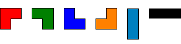
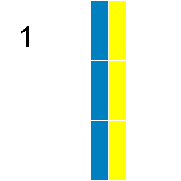

A triomino is a shape consisting of three squares joined via the edges. There are two basic forms:
If all possible orientations are taken into account there are six:

Any n by m grid for which nxm is divisible by 3 can be tiled with triominoes.
If we consider tilings that can be obtained by reflection or rotation from another tiling as different there are 41 ways a 2 by 9 grid can be tiled with triominoes:

In how many ways can a 9 by 12 grid be tiled in this way by triominoes?